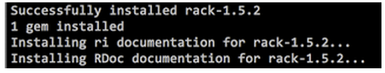
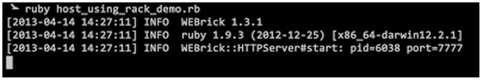
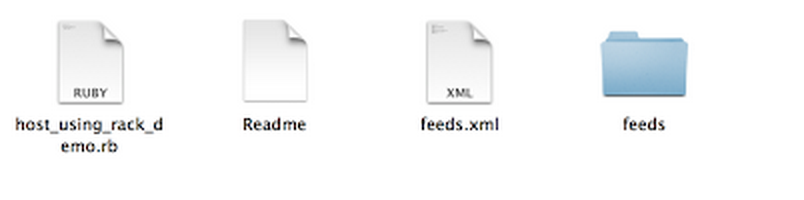
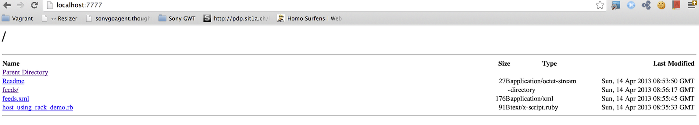

Strategy for Testing Localisation on Local Machines
Localisation Testing
Many software today are internationalized. They are customised according to the regions and locales. Testing it, is about verifying the translated text, date formats, measurements, etc. Testing localisation is an integral part of internationalized applications.
Strategy for localisation testing
Global applications have different text, date formats, etc. for different top level domains. For example, a global site www.myglobalsite.com will have text in English while www.myglobalsite.fr will have text in French. Their date formats, their measurement units, etc may differ.
For testing these differences, we will require such domains. But what if our application needs to be tested on our local machines? What if we do not still have the domain names?
So, hosts entries can come to the rescue!
/etc/hosts
The /etc/hosts file (present on your computer) is the place where the mapping of host names to IP addresses are kept. Our machines require to know some hostnames to IP address mappings before DNS can be referenced.
IP addresses- They are dotted numbers that identify every computer on the Internet host names- The computer name which is used to identify a it on the Internet (IP addresses are difficult to remember. So, host names are commonly used)
A typical /etc/hosts file consists of this:

To test our 'myglobalsite' application locally, we can add entries to this file.
The entries can be:
127.0.0.1 myglobalsite.com 127.0.0.1 myglobalsite.fr 127.0.0.1 myglobalsite.ch 127.0.0.1 myglobalsite.co.uk
and so on.
When the application runs on the local machine, when we hit the URL http://myglobalsite.com, the site for the '.com' top level domain will be shown. e.g.: Text in English. Similarly, when the URL http://myglobalsite.fr is hit, then the site for the '.fr' top level domain will be shown. e.g.: Text in French.
This way, we can make simple changes in the /etc/hosts file to be able to test the global application on our local machines.
Hosting Using Rack
There maybe times when you would want to host files or applications locally for manual or automated testing. You can do so easily using Rack.
What is Rack?
Rack is a modular Ruby webserver interface. The author of Rack- Christian Neukirchen says that Rack aims to provide minimal API for connecting webservers that support Ruby and Ruby web frameworks.
Hosting files or applications
You can host files or applications easily using rack. You can make use of Ruby to do this.
First, you need to install the rack gem using the command:
gem install rack
This will show a message that the gem has been installed.
If the installation of this gem fails due to permissions, you might have to do:
sudo gem install rack
Use sudo only when other options do not work for you.
Now, create a ruby file called host_using_rack_demo.rb
Add the following contents into the newly created ruby file:
require 'rack'
Rack::Handler::WEBrick.run(
Rack::Directory.new("."),
:Port => 7777
)
WEBrick is a Ruby library. It provides HTTP web server services. It can also be configured as HTTPs server, proxy server, etc. You can read more about WEBrick in ruby-docs.
The line:
Rack::Directory.new(".")
specifies which directory needs to be hosted. Since we have specified ".", the current directory will be hosted. You can specify the required path.
:Port => 7777
indicates which port to host on. We have currently hosted on port 7777. You can specify the port of your choice.
Now, save this file and simply run using command:
ruby host_using_rack_demo.rb
This will start the HTTP server at the specified port 7777.
The files and folders that are present in the same location as the host_using_rack_demo.rb file (which is also my current working directory) are shown below:
These same files are hosted on port 7777.
How did we use it?
We were writing some tests using Cucumber + Ruby. For those tests, we had to host certain xml feeds. We had options of hosting them on Amazon cloud. But, its always good for tests to not have external dependencies whenever possible. So, we hosted the feeds using rack.
Also, we needed to stop hosting after the tests were complete. So, we started the server using a new thread and would kill that thread after the test.
While starting the server:
thread = Thread.new do
Rack::Handler::WEBrick.run(
Rack::Directory.new(dir_path),
:Port => port_number
)
end
While shutting the server down:
thread.kill
Rack, thus provides an easy way to host applications or files.